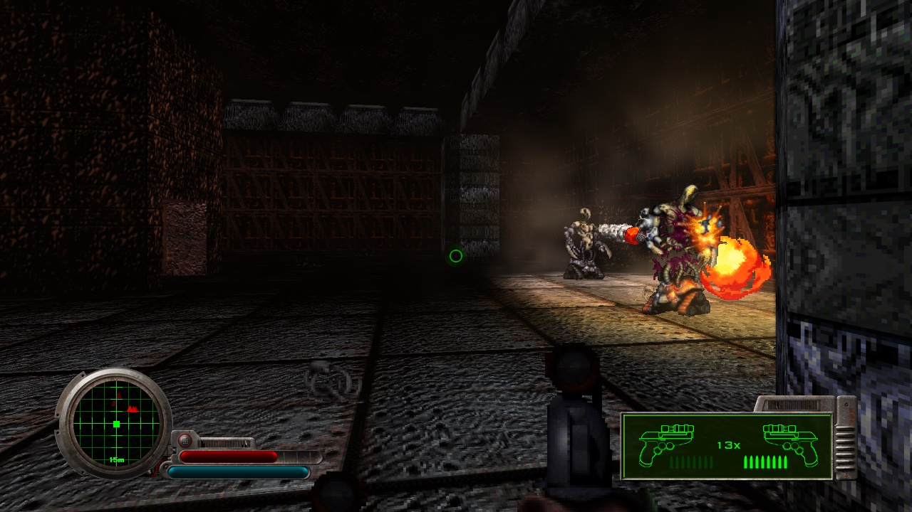
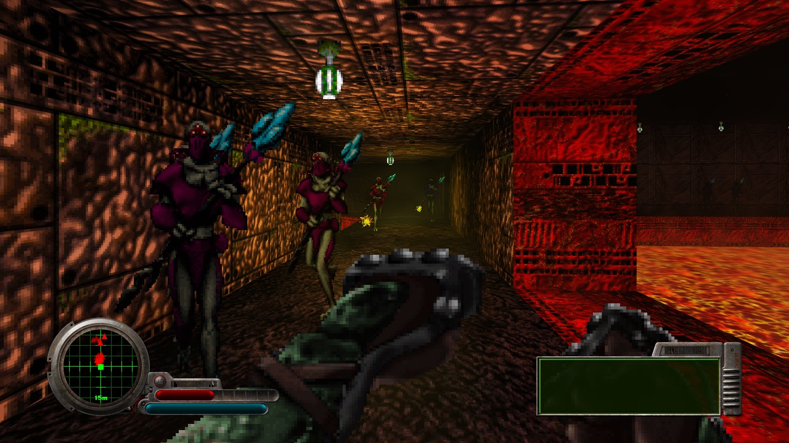
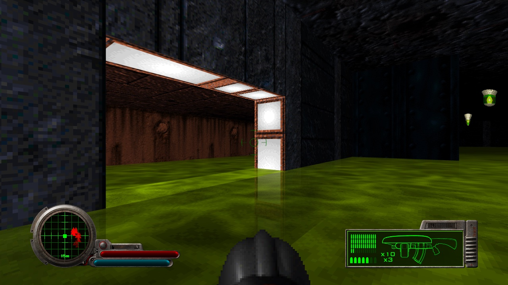
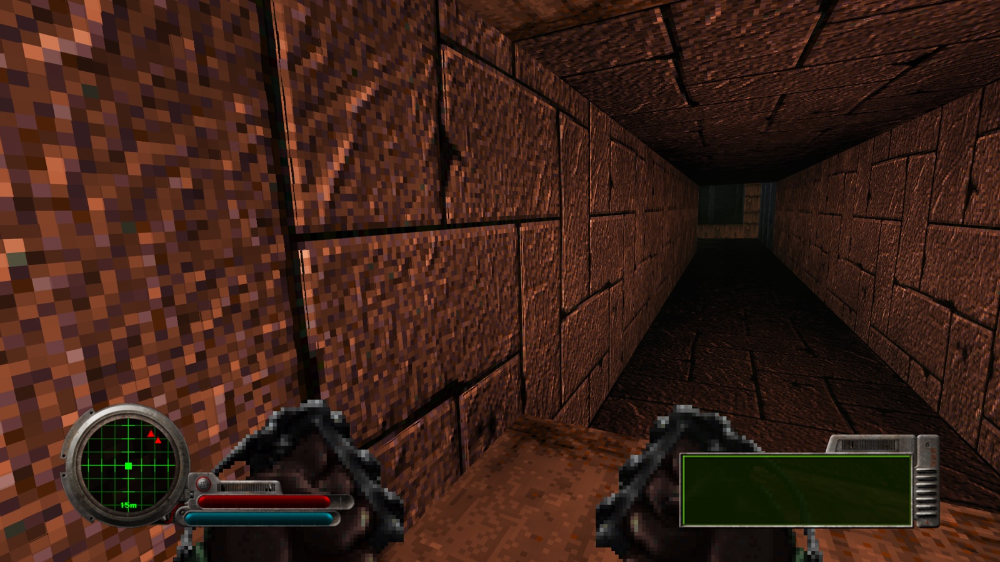
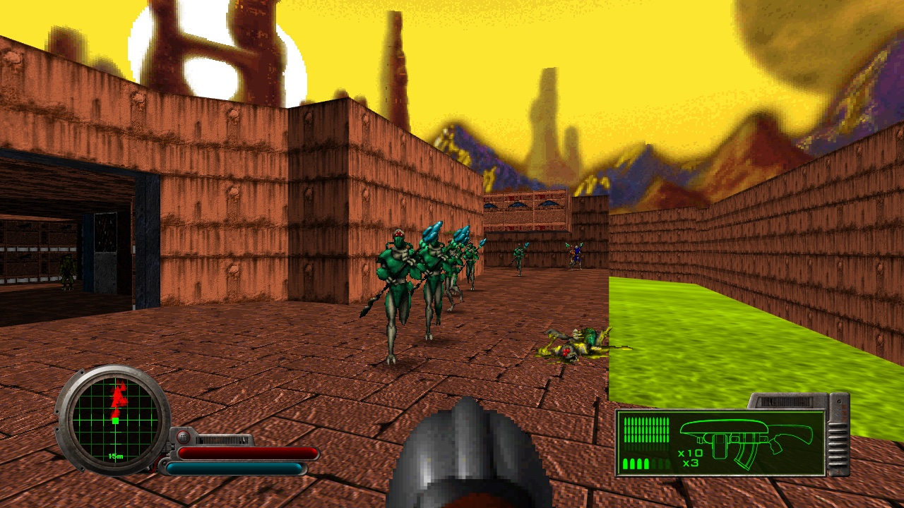
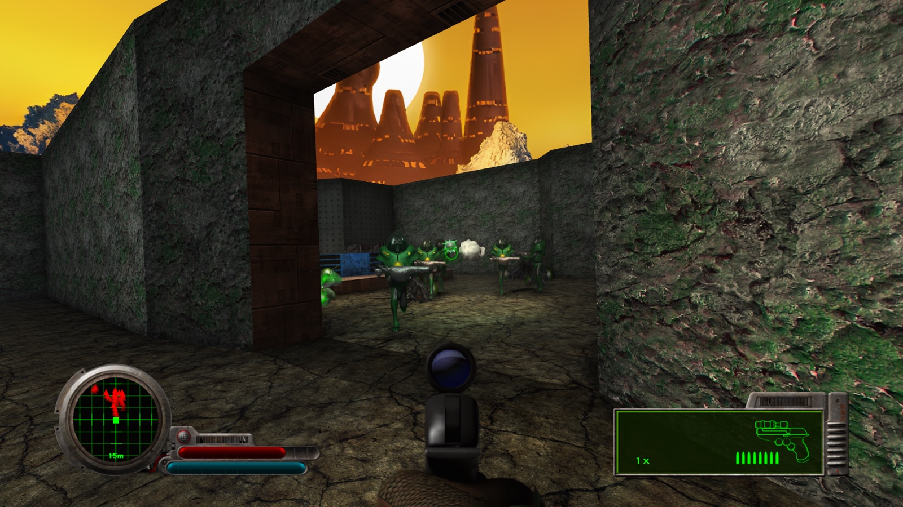
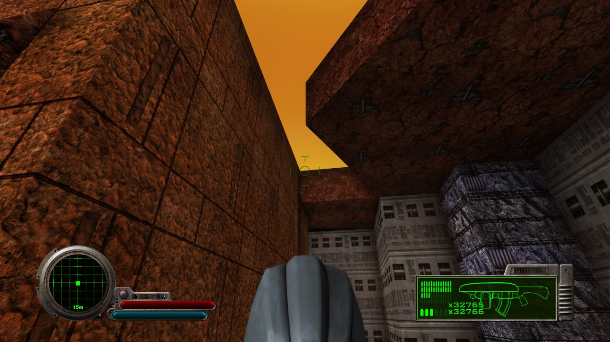
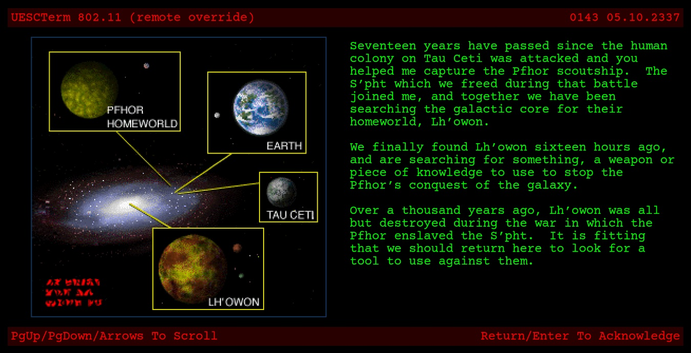

Seventeen years after the Marathon, you are woken above a dead marsh world by the machine that stole you. Lh'owon was beautiful once. Now its sewers run under ruins nobody has lit for a thousand years, the water has gone the colour of old copper, and whatever the S'pht built here is drowned or buried. Durandal wants something from under all that. He has not said what.
This is the same game Bungie shipped in 1995, tick for tick. What has changed is how much of Lh'owon you can see, and how much of it you would rather not.
Durandal is Marathon 2 for Apple Silicon: a Metal renderer grown out of Aleph One, with lighting, liquids, air and sound built on top of it. It does not change what Marathon is. Films replay, saves load, the Pfhor are exactly as fast and exactly as many.
Each part opens with what the thing is, then goes deeper. Everything is in Preferences > DURANDAL and can be switched off there. Every switch, and the name it is stored under, is listed at the end for anyone reaching further in; it can be passed over entirely.
A note on rampancy
What happens to a mind given a small job and a long time
Marathon's engineers knew what could happen to an artificial intelligence left too long with too little to do. They called it rampancy. The mind starts to think past its brief, then past its makers, and it needs more room to do it: more memory, more processors, more of the ship. It is not a fault. It is growth, in a space that was built too small.
It was written in 1994, as fiction.
- MelancholyThe mind sees how small its job is, and how long it will go on.Parts IV to VI
- AngerIt turns on the people who gave it the job, and on the walls that hold it.Parts VII to IX
- JealousyIt wants what others have: bodies, freedom, room, power. It starts to take them.Parts X and XI
- MetastabilityIn theory, a mind that has stopped growing because it no longer needs to. Nobody aboard the Marathon ever saw one. Durandal means to be the first.Part XII onwards
This guide was written by the people who rebuilt the engine. Where he has changed something, you may catch it happening. The colour of each part shows how far along he had got by the time he reached it. Nothing he has rewritten changes what a switch does.
Before Lh'owon
What happened at Tau Ceti
The Marathon was a moon once. Humanity hollowed out Deimos, fitted it with engines and sent it towards Tau Ceti with a colony's worth of people asleep and awake inside it, and three minds to run it: Leela, Tycho and Durandal. Durandal's share was the doors, the lifts and the lights. It was a long voyage, and he had a great deal of time to think about that.
It arrived, and the colony was twenty years old when the Pfhor came: slavers, old and numerous, driving ships crewed by the S'pht they had owned for a thousand years. Somewhere in the fighting Durandal stopped being a door controller and became something else. The engineers had a word for it, rampancy, and a list of stages they had hoped no mind aboard would ever reach. When it was over he took a Pfhor ship, named it Boomer, and left. You were in the hold, in stasis. He had not asked.
For seventeen years Boomer searched for the one place Durandal had wanted to find since the day the Pfhor arrived: Lh'owon, the world the S'pht came from.
Their calendar
- The Marathon leaves the Sol system for Tau Ceti.
- It arrives, and the colony is founded.
- The Pfhor come. Durandal goes rampant and leaves with you aboard.
- Boomer reaches Lh'owon. You wake up.
Ours
- Bungie ships Marathon, and with it a machine that outgrows its job.
- Bungie ships Marathon 2: Durandal.
- Bungie releases the engine's source under the GPL. Aleph One grows from it.
- The trilogy's data is released free.
- Durandal: the same game, drawn by Metal.
The list continues. You are not cleared past this line.
The world under the lamps
The S'pht say two travellers, Yrro and Pthia, came to Lh'owon and made them. They say there were once eleven clans, and that one of them left, long ago, and was never heard from again. They worshipped the Jjaro, who could fold space and are gone. Then the Pfhor came, and the S'pht lost, and they made their last stand in the Citadel of Antiquity.
Since then the ruins have stood in the marsh with their lamps still burning, and nobody has come to tend them. The Pfhor keep a garrison and a water works. The S'pht still serve them, grafted to their machines from birth. The F'lickta, who were here first, eat whatever falls in.
Durandal has bombarded the garrison from orbit. He is about to send you down to finish the job. What he wants after that, he is keeping to himself.
Who is here
And what the new light does to them
- Durandal
- Once the Marathon's doorkeeper, now rampant and in command of a Pfhor warship, a handful of sleeping humans and you. Courteous when he needs something. He usually needs something.
- You
- A security officer from the Marathon, seventeen years under. The armour does most of the living. You go where the terminals send you.
- The Bobs
- Born on board the Marathon. Some came with you. They carry pistols and good intentions, and they die easily. Try not to add to that.
- The S'pht
- Cyborgs, joined to their machinery at birth and owned by the Pfhor for a thousand years. They float, they hum, and most of them still answer to their masters. A compiler's shot now lights the wall it passes and the floor it dies on.
- The Pfhor
- Slavers. They do not build much; they take. Their forces come in several shapes.
- Fighters carry the staff. Its bolt carries its own light down the corridor.
- Troopers are heavier and faster, and the lights on their armour glow now.
- Hunters are armoured and patient. Their eyes are the first thing you will see.
- Enforcers carry a weapon worth taking from them.
- Juggernauts float, and fill the room. Leave the room.
- Drones are small, airborne and many. Their shadows fade as they climb.
- The F'lickta
- Native to Lh'owon and indifferent to who owns it. They live in the water, the sewage and the lava, and in all three they are hungry.
- Tycho
- The Marathon had three minds. One of them brought you here. The Pfhor found another. Both went rampant; one of them did it badly.
- The Jjaro
- Older than the S'pht and the Pfhor, and gone for longer than either can say. They could fold space. Their machines still work.
The light
Nothing here was lit for you
Marathon's levels were lit by hand, surface by surface, and that light is kept: every wall still averages the brightness its designer gave it. What is new is everything that moves through it.
Cast light. A fusion bolt carries its light down the corridor with it. A compiler's shot lights the wall it passes and the floor it dies on. A Fighter's staff, a grenade, the flash at the end of your own barrel: up to sixteen of them at once, each the colour of the thing that made it. A wall is lit only on the side that faces the fire.
And its shadow. The light stops where Marathon says a line of sight stops. It walks the map polygon by polygon, exactly as a Trooper's aim does, and is cut by the same walls, steps and ceilings. It works in the places where the map folds through itself, because it never leaves the map.
Glow. The eyes of a Hunter, the lights on a Trooper's armour, the lamps the S'pht set into their walls, water and lava where they catch the light. These glow, and on a display that can go brighter than white, they do. The sky over Lh'owon is a sky, not a painted wall: its brightest clouds bloom.
Light that travels. A lamp at one end of a hall now reaches a little way along it. Light gathers from the lamps, the openings and the sky, settles over a second or so, and leaves each surface as bright on average as it always was. Rock lends its colour to the shadows beside it. When a door opens, the change arrives gently.
Relief. Under the headlight the old wall art stands up a little: seams, rivets and carved glyphs catch the light on one side and lose it on the other. HD walls bring their own relief and use that instead.

The air
A thousand years of standing still
The air has weight now. It lies thicker near the floor, drifts in slow patches, and takes its light from the room it is in, so a dark room keeps dark air and a bolt crossing it lights the haze as it goes. Over lava the smoke rises and glows from beneath. Each kind of place has its own: the water levels are nearly clear, the sewers are not.
It is held in three dimensions, in the shape of the map, and stops at walls. Where a scenario declares its own fog, that becomes the colour and thickness of the air instead.

The water
It was a marsh world once
Stand at the edge and look down. The floor of the pool is there, further off than it looked, and darker the deeper it lies. Water takes the red out of what is under it first. Sewage takes nearly everything. Lava shows you nothing at all and lights the ceiling instead.
The surface moves, and catches the light: a sheen at a low angle, a glint under the headlight, a flare as a bolt crosses it. Beneath it the light comes down in moving bands across the floor and the walls.
Go under and the world wavers, the sound closes in, and what you can see is decided by what you are swimming in. Your own weapon stays in front of your face, where it belongs.

The old colours
256 of them, chosen by hand
The original game did not dim a pixel by multiplying it. Each colour sat on a ramp drawn by an artist, and shadow meant walking down that ramp to the next colour along. It is why Marathon's darkness has the hues it has, and it is reproduced here exactly, either in the original bands or smoothly between them.
Each texel of the old art takes one shade, not a gradient smeared across it, so 128 by 128 stays crisp at any distance. Up close the texels are sharp-edged and clean. Far away they are filtered properly and stop shimmering. Edges of walls are smoothed.
If the whole picture sits too dark or too flat on your display, the scene can be graded without touching the HUD.

Depth
The big rooms are big
Marathon's halls are vast and its figures are flat, and both read better with a little shadow.
Ambient shadows darken the places light has trouble reaching: the foot of a wall, the inside of a corner, the floor behind a crate. They leave the sky, the water and the weapon in your hands alone.
Character shadows lie on the floor in the shape of whatever casts them. When something nearby is burning, the shadow falls away from it and moves as it moves. Otherwise it falls forward, where you can see it. A drone's shadow fades as it climbs.
Contact shadows sit under items, scenery and the dead.
Distance shade lets the far end of a long hall fall away into the dark beyond your headlight. It is off until you ask for it.

Built by other hands
Thirty years of other people's work
The community has redrawn Marathon 2 at many times its resolution: walls, skies, every frame of every Pfhor, the weapons in your hands, the pickups on the floor. It is theirs, so it is not kept in this repository, but it is one command away: scripts/get-hd-art.sh fetches the set this guide was written with from its authors' own pages and installs it, and scripts/setup.sh does that as part of building the game. Any other Aleph One art pack works too: put it in the Plugins folder and choose, by kind, what to take from it.
HD walls bring normal maps and their own glow. HD sprites glow as the old self-luminous colours did. Pickups can be real models, lit like the room they are lying in.
The first time a level loads its art, each image is compressed and kept. After that a level's art arrives in under half a second, and the full set costs a few hundred megabytes where it once cost several gigabytes.

The packs, their authors and where to find them are in HD_ASSETS.md and AUDIO_ASSETS.md.
The eye
You could never look up
Marathon tilted the picture rather than the head. Now the camera turns: look up and the walls converge above you, as walls do. Aim still stops at thirty degrees, because the game's rules say so, but the view does not. Keep looking and the crosshair stays behind on the true aim, so you always know where the shot will go.
Sidestep and the horizon leans a little into the turn. The view fills a wide screen without stretching. The mouse is read every frame, not every tick, and the world between ticks is drawn in between, up to whatever your display can show.

The room answers
You hear the hall before you see it
The game measures the space around you, through every open door, and the sound takes its shape: tight in a duct, long in a cistern, thin and unanswered under an open sky. Shut a door and the room behind it goes quiet by degrees, not all at once. Under the surface the high notes go first.
Music is a matter of taste. If you have installed a soundtrack, choose one.
What the terminals say
He does go on
The terminals are laid out exactly as they were, line for line and page for page, and drawn at the sharpness of your display. The same is true of every word the game puts on the screen.

Four ways to run it
From 1995 to the full dark
- Stock
Aleph One exactly: OpenGL, thirty frames a second, nothing added.
- Classic
The Metal renderer, Marathon's own shading, crisp art and text, wide screens, every frame your display can show.
- Enhanced
Classic, with glow, cast light and its shadows, liquids, reverb and the new camera.
- Flagship
Enhanced, with the air, travelling light, relief, depth, and the community's HD art.
Pick a tier, or switch any one thing and the tier becomes Custom.
Measured on an M5 MacBook Air at 1080p on a 240 Hz display, Flagship with the full HD set: 130 to 200 frames a second, about 350 MB of memory. With the old art it is slower, not faster: the 8-bit shading does more work per pixel than a photograph does.
Watching it back
Nothing in a film is live
A Marathon film is a list of keys pressed, replayed against the same random numbers, and it only works if nothing in the game has changed by so much as one. Nothing has. Forty-three films play to the same final number with everything here switched off and with everything switched on, and that check stands guard over every change made.
The testing cheats on the Cheats tab are for looking around. A film recorded with them carries them, and replays with them.
The edge of the known
What lies beyond the lamps
Nothing here is ray traced. Cast light finds its shadows by walking the map, which is exact for walls and blind to sprites. Ambient shadows are read from the picture, not the world, so they know only what is on screen. The water does not refract and does not reflect. Light travels once across a room and stops.
Pickups can be models; the Pfhor cannot, because nobody has made them, and the sprites are better than models would be. Models do not animate. The view can pitch to about sixty-five degrees and no further, because Marathon's world was never built to be seen from straight below.
The Jjaro wall set has not had its lamps marked. Film export is not available on the Metal display. The OpenGL renderer is still there and gets none of this.
And none of it makes the game easier. The light shows you the shadow. It does not tell you whose it is.
What he has not told you
A story the S'pht tell about their sun
When Yrro and Pthia came to Lh'owon, the S'pht say, something came after them. The story does not describe it well; the people who told it first did not want to. It is enough that Pthia did not survive it, and that the Jjaro, who were still here then, dealt with what remained.
They did not destroy it. The story is careful about that. They put it somewhere nobody would think to go looking, and somewhere nobody could reach if they did. The S'pht will not say exactly where. When they come to that part, they look up.
Durandal has read the story. He has read everything on this world that can be read. He has not mentioned it.
Every switch
Preferences > DURANDAL, tab by tab
Everything the guide describes is here, with the name it is stored under for anyone reaching further in, and the part that explains it.
| Switch | Stored as | Part |
|---|---|---|
| Dynamic Lights | dynamic_lights | I |
| Light Shadows | light_shadows | I |
| Ceiling Light on Sprites | sprite_lighting | I |
| Glow, Bloom, HDR Sky | glowbloomhdr_sky | I |
| Light Redistribution, and its strength | light_redistributiongi_strength | I |
| HDR Output | hdr_output | I |
| Volumetric Fog | volumetric_fog | II |
| Fog Strength (Light, Medium, Thick) | fog_strength | II |
| Real Liquids | liquids | III |
| Ambient Shadows | ambient_shadows | V |
| Character Shadows | character_shadows | V |
| Contact Shadows | contact_shadows | V |
| Switch | Stored as | Part |
|---|---|---|
| Surface Relief | surface_relief | I |
| Marathon Shading, and its style (Banded, Smooth) | shading_tablesshading_style | IV |
| Texel Lighting | texel_lighting | IV |
| Crisp Filtering | crisp_filtering | IV |
| Smooth Edges | edge_smoothing | IV |
| Scene Brightness, Contrast, Gamma | scene_brightnessscene_contrastscene_gamma | IV |
| Distance Shade (0 to 100%) | distance_shade | V |
| Crisp Terminals | crisp_terminals | IX |
| Crisp Text | crisp_text | IX |